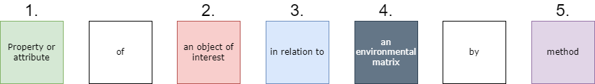
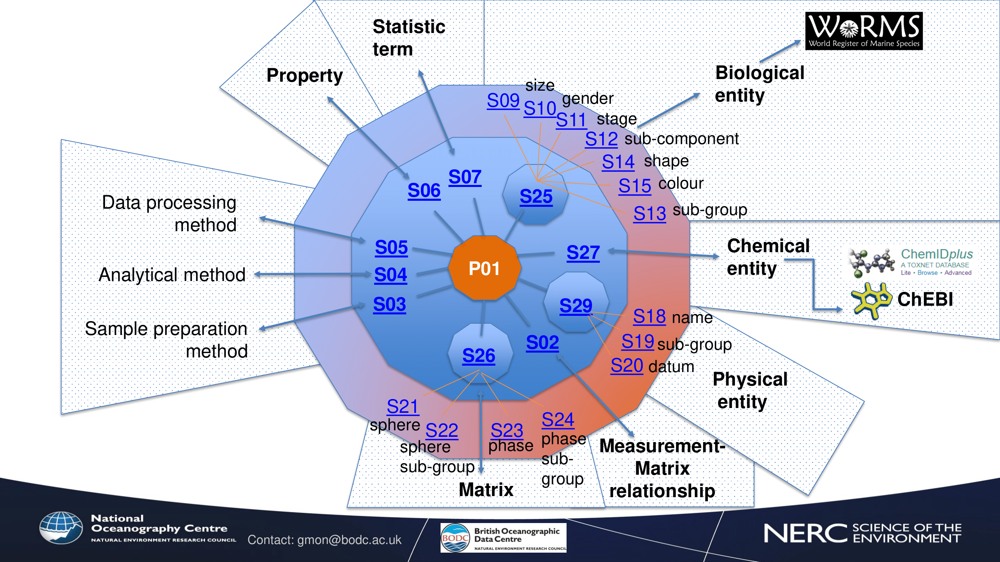
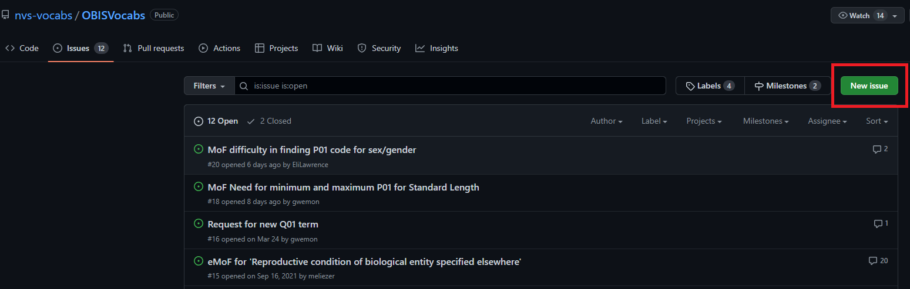
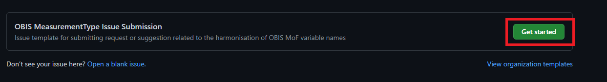
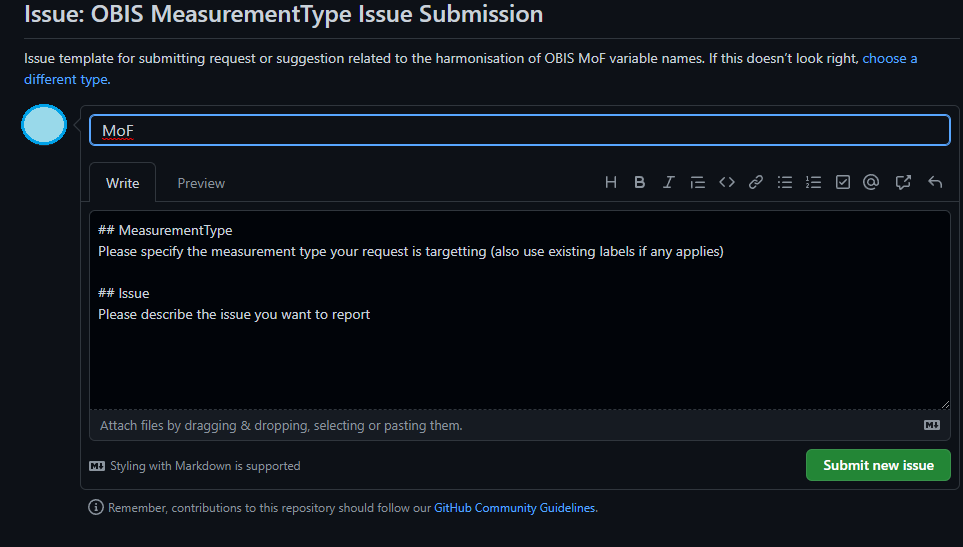
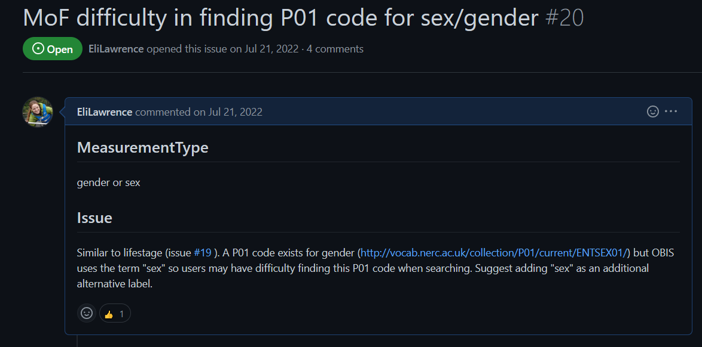

Controlled vocabulary for eMoF
Content
Map eMoF measurement identifiers to preferred vocabulary
MeasurementOrFact vocabulary background
Although Darwin Core guidance recommends using controlled vocabulary to populate the MeasurementOrFact terms measurementType, measurementValue, and measurementUnit, in many cases these fields are completely unconstrained and are populated with free text. While free text offers the advantage of capturing complex and as yet unclassified information, there is inevitable semantic heterogeneity (e.g., of spelling, wording, or language) that becomes a challenge for effective data interoperability and analysis. For example, if you were interested in finding all records related to length measurements, you would have to try to account for all the different ways “length” was recorded by data providers (length, Length, len, fork length, etc.).
Caution: You can use the OBIS Measurement Type search tool to see the diversity of measurementTypes that exist across published datasets in OBIS. However note that any measurementTypeIDs listed in this tool are solely for consultation purposes. In some cases codes may have been incorrectly chosen for the associated measurementType. You should always choose measurementTypeIDs based on your own data and the guidelines in this manual.
Thus the 3 identifier terms measurementTypeID, measurementValueID and measurementUnitID are used to standardize the measurement types, values and units. The identifiers provide clear and unambiguous definitions, ensuring dataset consistency and simplifying grouping and analysis of measurements by their Unique Resource Identifiers (URIs).
These three terms should be populated using controlled vocabularies referenced using URIs. For OBIS, we recommend using the internationally recognized NERC Vocabulary Server, developed by the British Oceanographic Data Centre (BODC). However, you may use any vocabulary source that has machine-interopable URIs. The NERC Vocabulary Server can be accessed through:
- SeaDataNet facet search https://vocab.seadatanet.org/p01-facet-search (recommended for searching the P01 collection, detailed below)
- NERC Vocabulary Server (NVS) search https://www.bodc.ac.uk/resources/vocabularies/vocabulary_search/
- Semantic Model Vocabulary Builder https://www.bodc.ac.uk/resources/vocabularies/vocabulary_builder/
Controlled vocabularies are incredibly important to ensure data are interoperable - readable by both humans and machines - and that the information is presented in an unambiguous manner. Vocabulary collections like NVS compile vocabularies from different institutions and authorities (e.g., ISO, ICES, EUNIS), allowing you to map your data to them. In this way, you could search for a single measurementTypeID and obtain all related records, regardless of differences in wording or language used in the data.
Each vocabulary “term” in NVS is a concept that describes a specific idea or meaning. For consistency, we refer to individual vocabularies in NVS as concepts. Concepts within NVS are organized into collections that group concepts with commonalities (e.g. all concepts pertaining to units). Sometimes collections contain concepts that are deprecated. Terms can be deprecated due to duplication of concepts, or when a term becomes obsolete. You should not use any deprecated concepts for any measurement ID. Deprecated concepts can be identified from lists on NVS because their identifier will have a red warning symbol, and the page for the term itself will indicate the concept is deprecated in red lettering. Unfortunately, there is currently no notification system in place to automatically warn you if a previously used concept has become deprecated. We recommend occasionally confirming that the concepts you or your institution use are still available for use.
Guidelines for populating each mesaurement ID are described below.
Populate measurementUnitID
The measurementUnitID field is the easiest measurement ID field to populate. It is used to provide a URI for the unit associated with the value provided to measurementValue (e.g. cm, kg, kg/m2). This field should be populated with concepts from the P06 collection, BODC-approved data storage units. Documentation for this collection can be found here.
The entire vocabulary list, including deprecated terms can be found at http://vocab.nerc.ac.uk/collection/P06/current. However, we strongly recommend using https://www.bodc.ac.uk/resources/vocabularies/vocabulary_search/P06/ to avoid potentially selecting deprecated terms.
Some examples of measurementUnits and the associated measurementUnitID include:
- Metres: http://vocab.nerc.ac.uk/collection/P06/current/ULAA/
- Days: http://vocab.nerc.ac.uk/collection/P06/current/UTAA/
- Metres per second: http://vocab.nerc.ac.uk/collection/P06/current/UVAA/
- Percent: http://vocab.nerc.ac.uk/collection/P06/current/UPCT/
- Milligrams per litre: http://vocab.nerc.ac.uk/collection/P06/current/UMGL/
Populate measurementValueID
The measurementValueID field is used to provide an identifying code for measurementValues that are non-numerical (e.g. sampling related, sex or life stage designation, etc.).
measurementValueID is NOT used for standardizing numeric measurements!
Unlike measurementUnitID, there is more than one collection which may be used to search for and use concepts from. The collection is dependent on which type of measurementValue you have. See the table below for some common, non-exhaustive examples. Note that behaviour is an exception in that we recommend to use codes from the ICES vocabulary server, instead of NERC. The video below, from the OBIS YouTube Vocabulary series , demonstrates how to find and select vocabularies for measurementValueID from both NERC and ICES.
| Type of measurementValue | Collection | Collection Documentation | Complete Vocabulary List |
|---|---|---|---|
| Sex (gender) | S10 | https://github.com/nvs-vocabs/S10 | <http://vocab.nerc.ac.uk/collection/S10/current/ |
| Lifestage | S11 | https://github.com/nvs-vocabs/S11 | http://vocab.nerc.ac.uk/collection/S11/current/ |
| Sampling instruments and sensors (SeaVoX Device Catalogue) | L22 | https://github.com/nvs-vocabs/L22 | http://vocab.nerc.ac.uk/collection/L22/current |
| Sampling instrument categories (SeaDataNet device categories) | L05 | https://github.com/nvs-vocabs/L05 | <http://vocab.nerc.ac.uk/collection/L05/current |
| Vessels (ICES Platform Codes) | C17 | - | http://vocab.nerc.ac.uk/collection/C17/current |
| European Nature Information System Level 3 Habitats | C35 | - | https://vocab.nerc.ac.uk/collection/C35/current/ |
| Behaviour | ICES Behaviour collection | https://vocab.ices.dk/?codetypeguid=d0268a96-afc9-436e-a4db-4f61c2b9f6ba |
You can also populate measurementValueID with references to papers or manuals that document the sampling protocol used to obtain the measurement. To do this you should use either:
- The DOI of the paper/manual
- Handle for publications on IOC’s Ocean Best Practices repository, e.g. http://hdl.handle.net/11329/304
Populate measurementTypeID
The NERC P01 Collection
One of the more important collections for OBIS is the P01 collection.
Important note! P01 codes are required for the measurementTypeID field when using NERC vocabulary.
The P01 is a large collection with >45,000 concepts. Each concept within this collection is composed of different elements that, together, construct a label used to describe a measurement. Frequently, concepts from the P01 collection are referred to as a “P01 code”. P01 codes are used to populate the measurementTypeID field. It is important to know that a semantic model, shown below, underlies each P01 code and the elements that compose them. There are 5 potential elements in this semantic model that, together, unambiguously describe a type of measurement.

- Property/attribute: the measurement or observation of either an object of interest or a matrix, or both
- Object of interest: a chemical object, a biological object, a physical phenomenon, or a material object
- In relation to: how the measurement is related to the environment
- Environmental matrix: what environment the measurement is in (e.g. water body, seabed); needed for most environmental measurements, but may not be necessary for e.g. biological measurements
- Method: any specific methods used that are important to interpret the measurement
Note: Not every element is required, but it is important to think about each piece of the model and how it may or may not apply to your measurement. More details about this are described below.
The P01 wheel, a diagram created by NERC, is shown below as a simple visualisation of how P01 elements relate to and are populated by other NERC collections.

You can use codes from other collections (e.g. P06, QL22) for measurementValueID and measurementUnitID fields, but for measurementTypeID you must always use a code from the P01 collection.
Selecting P01 codes for measurementTypeID
When selecting P01 codes, remember it is important to understand that each element within a P01 code is meant to describe an aspect of the measurement: what is the measurement, what is the object or entity being measured, in what environment was the measurement taken, by what kind of methods, etc.? By taking together all these elements, we are able to have a unique and specific description to differentiate one measurement from another. More documentation about the P01 code and the semantic model it is based on can be found here.
The P01 collection is found here and can be searched through the NERC vocabulary server.
There are several ways of searching for a P01 code, but we highly recommend using the SeaDataNet P01 Facet Search. You may notice when searching for measurement types related to an occurrence that specific taxonomic options are available to you, e.g., abundance of Notommata. For OBIS, all P01 codes should be generalized - i.e. do not select species-specific codes. Instead, only choose codes for “biological entities specified elsewhere”! This is due to the Darwin Core Archive structure - taxonomic identification is already specified in the Occurrence table, but measurements are recorded in the ExtendedMeasurementOrFact table.
When you are comfortable and understand P01 codes, you can also use the BODC Vocabulary Builder or simply search for terms directly on the NERC Vocabulary Server.
Vocabulary for measurements related to sampling instruments and/or sampling methods can also be found in the P01 collection and are mostly classified as sampling parameters (a search keyword that can be used in the SeaDataNet Facet search). These vocabulary used to fall under the Q01 collection, however this collection has been deprecated and the terms have been remapped to P01 codes (see GitHub issue on this here). See below for examples of sampling-related measurements and their associated P01 code:
- Description of sub-sampling protocol: https://vocab.nerc.ac.uk/collection/P01/current/DSPSSP01/
- Length of sampling track https://vocab.nerc.ac.uk/collection/P01/current/LENTRACK/
- Height of sample collector (e.g. a grab) https://vocab.nerc.ac.uk/collection/P01/current/MTHHGHT1/0
- Name of sampling instrument https://vocab.nerc.ac.uk/collection/P01/current/NMSPINST/
- Sample duration https://vocab.nerc.ac.uk/collection/P01/current/AZDRZZ01/
Click the decision tree below to help you select P01 codes for biological, chemical, physical, and/or sampling measurements. See the OBIS YouTube Vocabulary series for guidance on how to use this tree and examples for different types of measurementTypeIDs. The tree also helps identify vocabulary collections for measurementUnitID and non-numeric measurementValueID.
Request new vocabulary terms
If you have already tried looking for a P01 code and were unable to identify a suitable code for your measurementType you must then request a code to be created. Before doing so, make sure you have not over filtered the search results. Then, to request a new term, your request must be submitted via:
- Submit request through the OBIS Vocabulary GitHub repository (https://github.com/nvs-vocabs/OBISVocabs/issues)
- Requests can also be emailed to vocab.services@bodc.ac.uk if you cannot access GitHub
- Registration with the BODC Vocabulary Builder
- Note: these requests should be based on combinations of existing concepts
We strongly recommend you use GitHub if you can, as it allows longer-term documentation, and can be relevant for other users who may be interested in the same type of code creation.
Finally, if you are unsure about whether a code fits your specific case, please feel free to ask questions to the Vocab channel on the OBIS Slack.
How to Submit a GitHub Vocabulary Request
- Navigate to https://github.com/nvs-vocabs/OBISVocabs/issues and click on the New Issue button.

- Click Get started

- Fill in the title with short details of your request or issue. Then fill in the description. It is recommended to list any existing terms that are similar to your request, or concepts that are sub-components of the request.

- Example: An issue was created to address difficulties in identifying P01 codes for sex rather than gender. Gender is a concept generally applied to humans, whereas “sex” is more applicable for animals. Thus the request was to either modify the current gender P01 code, or create a P01 code that specifies sex, not gender. At the time the request was issued, when users searched for a P01 term for “sex”, only species-specific terms were available.
